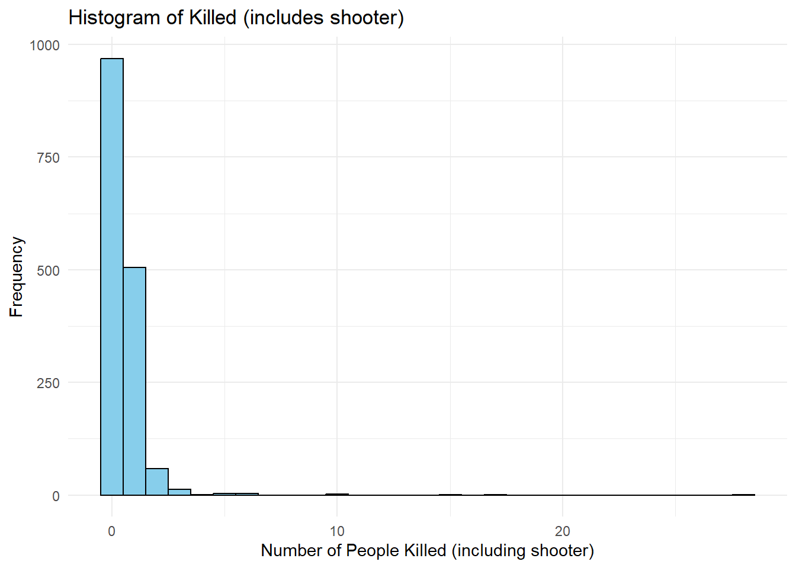

library(here)
load(here("data", "shooting_data.rda"))
df<- shooting_dataSchool Shooting Analysis
Brief description of the data:
The data set used in this analysis contains information about school shootings in the United States. Each row represents an individual shooting incident, with columns detailing various aspects of the incident. Key variables include the number of people killed (including the shooter), the number of shots fired, and the state where the shooting occurred.the data has been found in an open source online
Load the data
Table of descriptive statistics:
library(gtsummary)
summary_table <- tbl_summary(
data = df,
by = State,
include = c(`Killed (includes shooter)`, `Number of Shots Fired`, `Number of Shooters`),
label = list(
`Killed (includes shooter)` ~ "Killed (includes shooter)",
`Number of Shots Fired` ~ "Number of Shots Fired"
),
missing_text = "Missing"
)
summary_tableCharacteristic |
AK |
AL |
AR |
AZ |
CA |
CO |
CT |
DC |
DE |
FL |
GA |
HI |
IA |
ID |
IL |
IN |
KS |
KY |
LA |
MA |
MD |
ME |
MI |
MN |
MO |
MS |
MT |
NC |
ND |
NE |
NH |
NJ |
NM |
NV |
NY |
OH |
OK |
OR |
PA |
RI |
SC |
SD |
TN |
TX |
UT |
VA |
VI |
VT |
WA |
WI |
WV |
WY |
|---|---|---|---|---|---|---|---|---|---|---|---|---|---|---|---|---|---|---|---|---|---|---|---|---|---|---|---|---|---|---|---|---|---|---|---|---|---|---|---|---|---|---|---|---|---|---|---|---|---|---|---|---|
| Killed (includes shooter) | 0.00 (0.00, 0.00) | 0.00 (0.00, 0.00) | 0.00 (0.00, 1.00) | 1.00 (0.00, 1.00) | 0.00 (0.00, 1.00) | 0.00 (0.00, 1.00) | 0.00 (0.00, 1.00) | 0.00 (0.00, 1.00) | 0.00 (0.00, 1.00) | 0.00 (0.00, 1.00) | 0.00 (0.00, 1.00) | 0.00 (0.00, 0.00) | 0.00 (0.00, 1.00) | 0.00 (0.00, 1.00) | 0.00 (0.00, 1.00) | 0.00 (0.00, 1.00) | 0.00 (0.00, 1.00) | 0.00 (0.00, 1.00) | 0.00 (0.00, 1.00) | 0.00 (0.00, 1.00) | 0.00 (0.00, 1.00) | 1.00 (1.00, 1.00) | 0.00 (0.00, 1.00) | 0.50 (0.00, 1.00) | 0.00 (0.00, 1.00) | 0.00 (0.00, 1.00) | 0.00 (0.00, 1.00) | 0.00 (0.00, 1.00) | 0.00 (0.00, 0.00) | 0.00 (0.00, 0.00) | 0.00 (0.00, 1.00) | 0.50 (0.00, 1.00) | 0.00 (0.00, 1.00) | 0.00 (0.00, 1.00) | 0.00 (0.00, 1.00) | 0.00 (0.00, 1.00) | 0.00 (0.00, 1.00) | 0.50 (0.00, 1.00) | 0.00 (0.00, 1.00) | 0.00 (0.00, 1.00) | 0.00 (0.00, 1.00) | 0.00 (0.00, 0.00) | 0.00 (0.00, 1.00) | 0.00 (0.00, 1.00) | 0.00 (0.00, 1.00) | 0.00 (0.00, 1.00) | 0.00 (0.00, 0.00) | 1.00 (1.00, 1.00) | 1.00 (0.00, 1.00) | 0.00 (0.00, 1.00) | 1.00 (0.00, 2.00) | 1.50 (1.00, 2.00) |
| Number of Shots Fired | 1.50 (1.00, 2.00) | 1.00 (1.00, 1.00) | 1.00 (1.00, 1.00) | 1.00 (1.00, 2.00) | 1.00 (1.00, 3.00) | 1.00 (1.00, 4.00) | 1.00 (1.00, 1.00) | 2.00 (1.00, 5.50) | 1.00 (1.00, 1.00) | 1.00 (1.00, 2.00) | 1.00 (1.00, 1.00) | 1.00 (1.00, 1.00) | 1.00 (1.00, 2.00) | 1.00 (1.00, 1.00) | 1.00 (1.00, 2.50) | 1.00 (1.00, 2.00) | 2.50 (1.00, 7.00) | 1.00 (0.00, 2.00) | 1.00 (1.00, 3.00) | 1.00 (1.00, 1.00) | 1.00 (1.00, 2.00) | 1.00 (1.00, 1.00) | 1.00 (1.00, 3.00) | 1.00 (1.00, 1.50) | 1.00 (1.00, 4.00) | 2.00 (1.00, 3.00) | 2.00 (1.00, 4.00) | 1.00 (1.00, 2.00) | 1.00 (1.00, 1.00) | 2.00 (1.00, 3.00) | 1.00 (1.00, 1.00) | 1.00 (1.00, 5.00) | 2.00 (1.00, 5.50) | 3.00 (3.00, 3.00) | 1.00 (1.00, 3.00) | 1.00 (1.00, 2.00) | 1.00 (1.00, 2.00) | 1.00 (1.00, 5.00) | 1.00 (1.00, 3.00) | 2.50 (1.00, 4.00) | 1.00 (1.00, 1.00) | 1.00 (1.00, 1.00) | 1.00 (1.00, 2.00) | 1.00 (1.00, 2.00) | 1.50 (1.00, 2.00) | 1.50 (1.00, 4.00) | NA (NA, NA) | NA (NA, NA) | 1.00 (1.00, 2.00) | 3.00 (1.00, 4.00) | 2.00 (1.00, 3.00) | NA (NA, NA) |
| Missing | 3 | 23 | 10 | 4 | 85 | 8 | 12 | 11 | 4 | 38 | 23 | 0 | 3 | 1 | 37 | 9 | 9 | 8 | 18 | 6 | 14 | 0 | 34 | 4 | 20 | 6 | 1 | 20 | 0 | 5 | 2 | 7 | 4 | 5 | 18 | 29 | 4 | 5 | 27 | 3 | 13 | 1 | 21 | 47 | 3 | 10 | 1 | 2 | 13 | 7 | 1 | 2 |
| Number of Shooters | ||||||||||||||||||||||||||||||||||||||||||||||||||||
| 0 | 0 (0%) | 0 (0%) | 0 (0%) | 0 (0%) | 0 (0%) | 0 (0%) | 0 (0%) | 0 (0%) | 0 (0%) | 0 (0%) | 0 (0%) | 0 (0%) | 0 (0%) | 0 (0%) | 0 (0%) | 0 (0%) | 0 (0%) | 0 (0%) | 0 (0%) | 0 (0%) | 0 (0%) | 0 (0%) | 0 (0%) | 0 (0%) | 0 (0%) | 1 (5.3%) | 0 (0%) | 0 (0%) | 0 (0%) | 0 (0%) | 0 (0%) | 0 (0%) | 0 (0%) | 0 (0%) | 0 (0%) | 0 (0%) | 0 (0%) | 0 (0%) | 0 (0%) | 0 (0%) | 0 (0%) | 0 (0%) | 0 (0%) | 0 (0%) | 0 (0%) | 0 (0%) | 0 (0%) | 0 (0%) | 0 (0%) | 0 (0%) | 0 (0%) | 0 (0%) |
| 1 | 5 (100%) | 47 (98%) | 16 (89%) | 12 (92%) | 132 (92%) | 16 (84%) | 18 (100%) | 22 (92%) | 9 (100%) | 88 (97%) | 49 (94%) | 3 (100%) | 11 (92%) | 3 (100%) | 60 (92%) | 24 (92%) | 12 (92%) | 16 (100%) | 39 (89%) | 12 (86%) | 40 (87%) | 2 (100%) | 62 (91%) | 11 (100%) | 37 (95%) | 16 (84%) | 8 (100%) | 44 (92%) | 1 (100%) | 9 (100%) | 7 (100%) | 10 (91%) | 12 (100%) | 13 (100%) | 50 (94%) | 54 (95%) | 12 (100%) | 14 (93%) | 51 (91%) | 5 (100%) | 22 (88%) | 4 (100%) | 44 (98%) | 127 (93%) | 13 (100%) | 28 (100%) | 0 (0%) | 1 (100%) | 32 (94%) | 17 (100%) | 3 (100%) | 1 (50%) |
| 2 | 0 (0%) | 1 (2.1%) | 1 (5.6%) | 0 (0%) | 9 (6.3%) | 2 (11%) | 0 (0%) | 2 (8.3%) | 0 (0%) | 3 (3.3%) | 3 (5.8%) | 0 (0%) | 0 (0%) | 0 (0%) | 4 (6.2%) | 2 (7.7%) | 1 (7.7%) | 0 (0%) | 3 (6.8%) | 2 (14%) | 5 (11%) | 0 (0%) | 4 (5.9%) | 0 (0%) | 2 (5.1%) | 0 (0%) | 0 (0%) | 4 (8.3%) | 0 (0%) | 0 (0%) | 0 (0%) | 1 (9.1%) | 0 (0%) | 0 (0%) | 3 (5.7%) | 3 (5.3%) | 0 (0%) | 1 (6.7%) | 4 (7.1%) | 0 (0%) | 3 (12%) | 0 (0%) | 1 (2.2%) | 7 (5.1%) | 0 (0%) | 0 (0%) | 1 (100%) | 0 (0%) | 2 (5.9%) | 0 (0%) | 0 (0%) | 1 (50%) |
| 3 | 0 (0%) | 0 (0%) | 0 (0%) | 0 (0%) | 1 (0.7%) | 1 (5.3%) | 0 (0%) | 0 (0%) | 0 (0%) | 0 (0%) | 0 (0%) | 0 (0%) | 0 (0%) | 0 (0%) | 1 (1.5%) | 0 (0%) | 0 (0%) | 0 (0%) | 2 (4.5%) | 0 (0%) | 0 (0%) | 0 (0%) | 2 (2.9%) | 0 (0%) | 0 (0%) | 2 (11%) | 0 (0%) | 0 (0%) | 0 (0%) | 0 (0%) | 0 (0%) | 0 (0%) | 0 (0%) | 0 (0%) | 0 (0%) | 0 (0%) | 0 (0%) | 0 (0%) | 1 (1.8%) | 0 (0%) | 0 (0%) | 0 (0%) | 0 (0%) | 1 (0.7%) | 0 (0%) | 0 (0%) | 0 (0%) | 0 (0%) | 0 (0%) | 0 (0%) | 0 (0%) | 0 (0%) |
| 4 | 0 (0%) | 0 (0%) | 0 (0%) | 1 (7.7%) | 1 (0.7%) | 0 (0%) | 0 (0%) | 0 (0%) | 0 (0%) | 0 (0%) | 0 (0%) | 0 (0%) | 0 (0%) | 0 (0%) | 0 (0%) | 0 (0%) | 0 (0%) | 0 (0%) | 0 (0%) | 0 (0%) | 1 (2.2%) | 0 (0%) | 0 (0%) | 0 (0%) | 0 (0%) | 0 (0%) | 0 (0%) | 0 (0%) | 0 (0%) | 0 (0%) | 0 (0%) | 0 (0%) | 0 (0%) | 0 (0%) | 0 (0%) | 0 (0%) | 0 (0%) | 0 (0%) | 0 (0%) | 0 (0%) | 0 (0%) | 0 (0%) | 0 (0%) | 1 (0.7%) | 0 (0%) | 0 (0%) | 0 (0%) | 0 (0%) | 0 (0%) | 0 (0%) | 0 (0%) | 0 (0%) |
| 6 | 0 (0%) | 0 (0%) | 0 (0%) | 0 (0%) | 0 (0%) | 0 (0%) | 0 (0%) | 0 (0%) | 0 (0%) | 0 (0%) | 0 (0%) | 0 (0%) | 1 (8.3%) | 0 (0%) | 0 (0%) | 0 (0%) | 0 (0%) | 0 (0%) | 0 (0%) | 0 (0%) | 0 (0%) | 0 (0%) | 0 (0%) | 0 (0%) | 0 (0%) | 0 (0%) | 0 (0%) | 0 (0%) | 0 (0%) | 0 (0%) | 0 (0%) | 0 (0%) | 0 (0%) | 0 (0%) | 0 (0%) | 0 (0%) | 0 (0%) | 0 (0%) | 0 (0%) | 0 (0%) | 0 (0%) | 0 (0%) | 0 (0%) | 0 (0%) | 0 (0%) | 0 (0%) | 0 (0%) | 0 (0%) | 0 (0%) | 0 (0%) | 0 (0%) | 0 (0%) |
| 8 | 0 (0%) | 0 (0%) | 1 (5.6%) | 0 (0%) | 0 (0%) | 0 (0%) | 0 (0%) | 0 (0%) | 0 (0%) | 0 (0%) | 0 (0%) | 0 (0%) | 0 (0%) | 0 (0%) | 0 (0%) | 0 (0%) | 0 (0%) | 0 (0%) | 0 (0%) | 0 (0%) | 0 (0%) | 0 (0%) | 0 (0%) | 0 (0%) | 0 (0%) | 0 (0%) | 0 (0%) | 0 (0%) | 0 (0%) | 0 (0%) | 0 (0%) | 0 (0%) | 0 (0%) | 0 (0%) | 0 (0%) | 0 (0%) | 0 (0%) | 0 (0%) | 0 (0%) | 0 (0%) | 0 (0%) | 0 (0%) | 0 (0%) | 0 (0%) | 0 (0%) | 0 (0%) | 0 (0%) | 0 (0%) | 0 (0%) | 0 (0%) | 0 (0%) | 0 (0%) |
| Missing | 0 | 0 | 1 | 1 | 30 | 2 | 1 | 3 | 1 | 6 | 1 | 0 | 1 | 0 | 8 | 1 | 0 | 1 | 7 | 1 | 4 | 0 | 5 | 1 | 3 | 1 | 0 | 1 | 0 | 0 | 0 | 3 | 0 | 1 | 2 | 4 | 1 | 1 | 4 | 0 | 3 | 1 | 5 | 10 | 0 | 0 | 0 | 1 | 2 | 1 | 0 | 0 |
| 1
Median (Q1, Q3); n (%) |
||||||||||||||||||||||||||||||||||||||||||||||||||||
# Save the table as an HTML file
library(htmltools)
gt_table <- as_gt(summary_table)
html_file <- here("output", "summary_table.html")
save_html(gt_table, file = html_file)Linear regression model:
library(broom.helpers)
model <- lm(`Killed (includes shooter)` ~ `State`, data = df)
# Create a regression table using tidy_parameters
regression_table <- tbl_regression(
model,
title = "Regression Analysis of Total Fatalities (Including Shooter) by State",
tidy_fun = broom.helpers::tidy_parameters
)
# Print the regression table
regression_tableCharacteristic |
Beta |
95% CI 1 |
p-value |
|---|---|---|---|
| State | |||
| AK | — | — | |
| AL | -0.17 | -1.3, 0.91 | 0.8 |
| AR | 0.23 | -0.92, 1.4 | 0.7 |
| AZ | 0.31 | -0.88, 1.5 | 0.6 |
| CA | 0.22 | -0.83, 1.3 | 0.7 |
| CO | 0.89 | -0.26, 2.0 | 0.13 |
| CT | 1.4 | 0.23, 2.5 | 0.019 |
| DC | 0.12 | -1.0, 1.2 | 0.8 |
| DE | 0.00 | -1.3, 1.3 | >0.9 |
| FL | 0.20 | -0.86, 1.3 | 0.7 |
| GA | -0.02 | -1.1, 1.1 | >0.9 |
| HI | -0.40 | -2.1, 1.3 | 0.6 |
| IA | 0.06 | -1.1, 1.3 | >0.9 |
| ID | -0.07 | -1.7, 1.6 | >0.9 |
| IL | 0.08 | -0.98, 1.1 | 0.9 |
| IN | -0.03 | -1.1, 1.1 | >0.9 |
| KS | -0.02 | -1.2, 1.2 | >0.9 |
| KY | 0.19 | -0.98, 1.4 | 0.8 |
| LA | -0.05 | -1.1, 1.0 | >0.9 |
| MA | -0.13 | -1.3, 1.1 | 0.8 |
| MD | -0.12 | -1.2, 0.96 | 0.8 |
| ME | 0.60 | -1.3, 2.5 | 0.5 |
| MI | -0.13 | -1.2, 0.94 | 0.8 |
| MN | 0.93 | -0.29, 2.2 | 0.14 |
| MO | 0.08 | -1.0, 1.2 | 0.9 |
| MS | 0.15 | -1.0, 1.3 | 0.8 |
| MT | -0.03 | -1.3, 1.3 | >0.9 |
| NC | -0.13 | -1.2, 0.95 | 0.8 |
| ND | -0.40 | -2.9, 2.1 | 0.8 |
| NE | -0.07 | -1.3, 1.2 | >0.9 |
| NH | -0.11 | -1.5, 1.2 | 0.9 |
| NJ | 0.31 | -0.88, 1.5 | 0.6 |
| NM | 0.18 | -1.0, 1.4 | 0.8 |
| NV | 0.17 | -1.0, 1.4 | 0.8 |
| NY | -0.02 | -1.1, 1.1 | >0.9 |
| OH | -0.07 | -1.1, 1.0 | 0.9 |
| OK | -0.02 | -1.2, 1.2 | >0.9 |
| OR | 0.23 | -0.95, 1.4 | 0.7 |
| PA | 0.18 | -0.89, 1.3 | 0.7 |
| RI | 0.00 | -1.5, 1.5 | >0.9 |
| SC | 0.03 | -1.1, 1.1 | >0.9 |
| SD | -0.40 | -1.9, 1.1 | 0.6 |
| TN | 0.00 | -1.1, 1.1 | >0.9 |
| TX | 0.09 | -0.95, 1.1 | 0.9 |
| UT | 0.06 | -1.1, 1.3 | >0.9 |
| VA | 0.03 | -1.1, 1.1 | >0.9 |
| VI | -0.40 | -2.9, 2.1 | 0.8 |
| VT | 0.60 | -1.3, 2.5 | 0.5 |
| WA | 0.35 | -0.75, 1.4 | 0.5 |
| WI | -0.01 | -1.2, 1.2 | >0.9 |
| WV | 0.60 | -1.1, 2.3 | 0.5 |
| WY | 1.1 | -0.82, 3.0 | 0.3 |
| 1
CI = Confidence Interval |
|||
Histogram of ’Killed (includes shooter)
library(ggplot2)
fig_hist <- ggplot(df, aes(x = `Killed (includes shooter)`)) +
geom_histogram(binwidth = 1, fill = "skyblue", color = "black") +
labs(title = "Histogram of Killed (includes shooter)",
x = "Number of People Killed (including shooter)",
y = "Frequency") +
theme_minimal()
fig_hist
# Save the figure
ggsave(here("output", "fig1_histogram.png"), plot = fig_hist, width = 8, height = 6)Write a function to calculate standard deviation of ‘Killed (includes shooter)’ for each state
library(dplyr)
calculate_sd_per_state <- function(data) {
result <- data |>
group_by(State) |>
summarise(SD_Killed = sd(`Killed (includes shooter)`, na.rm = TRUE))
return(result)
}
# Use the function to calculate standard deviation of 'Killed (includes shooter)' for each state
sd_per_state <- calculate_sd_per_state(df)
print(sd_per_state)# A tibble: 52 × 2
State SD_Killed
<chr> <dbl>
1 AK 0.894
2 AL 0.425
3 AR 1.16
4 AZ 0.726
5 CA 0.943
6 CO 3.23
7 CT 6.36
8 DC 0.580
9 DE 0.516
10 FL 1.78
# ℹ 42 more rowsShooting Incidents in Connecticut: The number of times there has been only one shooter in shooting incidents in Connecticut (CT) is 18 (100%).
The standard deviation of the number of people killed (including the shooter) in Connecticut is 6.3646502.
For the table: As shown in Table ?@tbl-sum, the descriptive statistics provide an overview of the data grouped by state.
For the figure: The Figure @fig1-histo illustrates the distribution of the number of people killed, including the shooter.